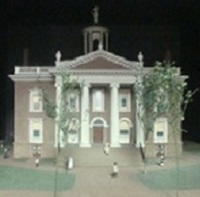

Philip Hooker
Philip Hooker was Albany's first great architect. He designed many of the more outstanding buildings erected in post-war Albany and across upstate New York. This sketch will place him in his Albany context. He was born in October 1766 and was the first son of Samuel and Rachel Hinds of Rutland, Massachusetts. Joining in the westward migration of aspiring Yankees, his parents re-located to Albany prior to the War for Independence.
Samuel Hooker is said to have been a carpenter and builder who was among those instructed to appraise the building located at the ferry in November 1787.
In 1790, the nine-member second ward household of Samuel and Rachel Hooker probably included their five sons and two daughters.
Perhaps our subject was the Philip Hooker who was listed as a "house carpenter" in the New York City directories for 1792 and '93. Hooker probably spent that decade learning from European architects and engineers who already were making an impact on the cityscapes of the new American nation. Hooker began to assemble a useful library and stayed behind in Albany when his parents and the rest of his family moved to Utica in 1797.
As early as 1796, his name was included on a list of Albany firemen. Later, he served the city government in a number of offices including those of alderman assessor, city architect, city superintendant, and city surveyor. In each of those offices, over several decades, he made a major impact on the development and transformation of the city of Albany.
By that time, Philip Hooker had associated himself with the Albany Dutch church. In June 1797, "Messrs. Hooker and Putnam" were identified as the "undertakers and architects" of the new church. He designed the new building that would be known as the "North Church" on North Pearl Street.
His New England-born first wife was named Mary. She died in 1812 at the age of thirty-nine. In January 1814, he married Sara Monk at the Albany Lutheran church.
In 1799, his house and lot on Orange Street was assessed moderately. The second ward census in 1800 configured his home with three young men, two girls and Philip and his wife as residents. Beginning with the first edition in 1813, this architect's residences were listed in the city directories and, over the next three decades, his holdings in various Albany locations were features of all community surveys.
He was a prominent member of a number of Albany-based organizations including the Albany Mechanics Society.
In 1808, he was among those invited to the notable funeral of Henry J. Bleecker.
As Albany's pre-eminent architect, Hooker's designs included the first State Capitol, a number of Albany churches and banks, the residence now known as the Fort Orange Club, the Albany Academy, the Albany city hall of 1832, and many others in Albany and beyond. He also was a cartographer/surveyor and artist/illustrator who produced an often reproduced watercolor of Schuyler Mansion in 1818.
Philip Hooker resigned as city surveyor in 1832. He died in January 1836 at the age of sixty-nine. He was buried "in full hope of a blessed eternity" in the Episcopal church plot. His will passed probate in February 1837. His often-photographed (and visited) gravestone now resides in the "old" section of Albany Rural Cemetery.
This brief presentation is essentially biographical and, as such, cannot do justice to the body of Hooker's overall work. A convenient summary listing of his creations appears in his Wikipedia article.
Detail of a model of Hooker's first State Capitol building. Copied from an interesting article on the legendary and always inspirational diorama cityscapes created by Paul Schrodt. This particular offering appears here because it strikes me as "odd and delightful."